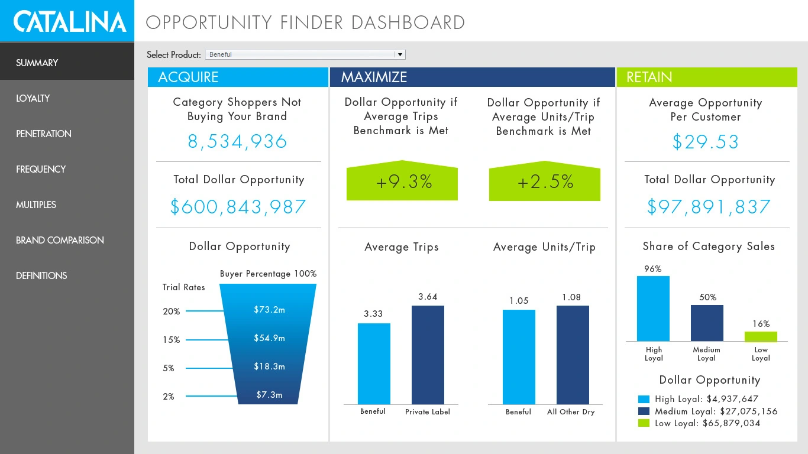
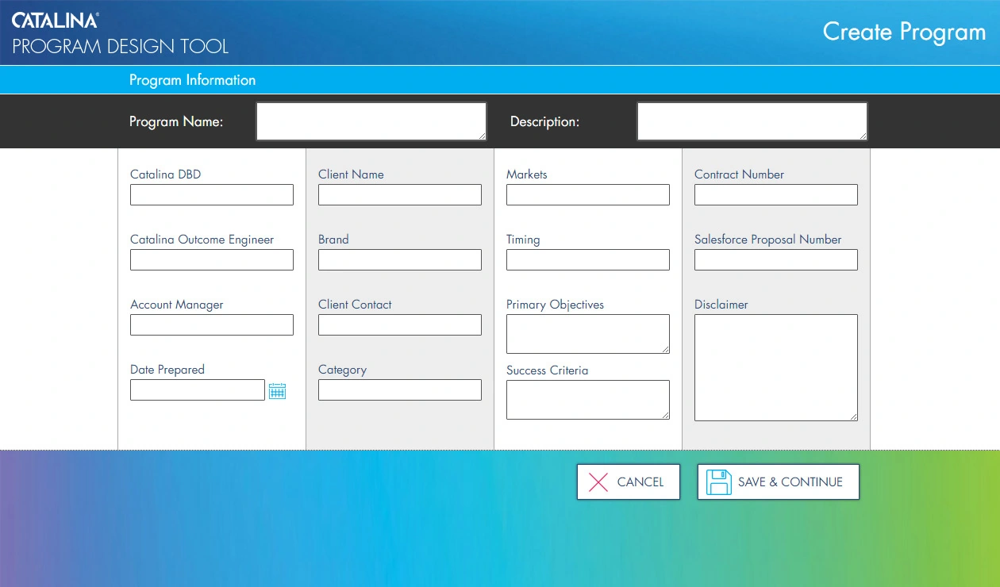
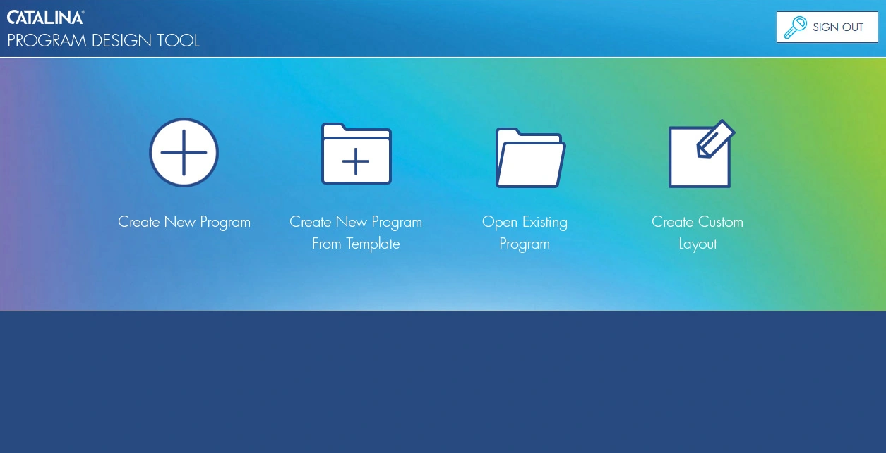

Product design
Catalina
Web application interfaces, user research, and front-end implementation.
Research and design leadership at national scale.
I led user research, experience architecture, and UX/UI design for Catalina’s CXP tool and the interfaces used to manage its receipt and couponing systems for CVS, Walgreens, and other major national brands. These UIs supported an operation generating an estimated $250–$300 million in revenue.
I led a small team of UX and UI designers while continuing to do hands-on research and design and contributing front-end development.
Project archive · Screens and concepts from the original engagement.


This dashboard was created for customers to interact with the data from their marketing campaigns with Catalina. It helped visualize complex data in different ways. The dashboard was bright, cheerful, and in line with Catalina’s brand while providing an attractive and easy to use UI.


A relatively simple micro application that helped customers and internal users submit new program requests that were then routed to the appropriate Catalina account managers. The tool tied in to Salesforce.


The relatively simple, yet appealing landing page for users when they first entered the Program Design Tool.

MXP was an application used primarily by internal account managers, but in some contexts by customers as well. Since campaigns were complex animals, MXP was designed to help users understand where a campaign was in the process with a visual checklist at the top of the screen. This allowed users to readily identify the next steps. The application was very complex and contained many screens and parameters of which this is only one. You will note the common design language, albeit more subdued here, with the Program Design Tool.